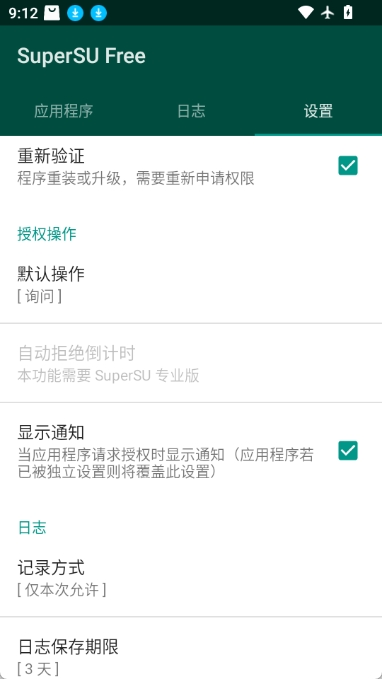
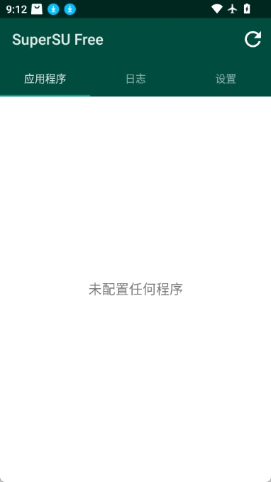

我的 SuperSU 突然不弹窗了，折腾半小时才找到那个开关
用了五年的 SuperSU 某天突然静默，所有 Root 请求都石沉大海。从怀疑 Root 丢了到一步步排查，最后发现只是一个被误关的开关——写下来给同好避坑。
上周三傍晚，我坐在地铁上想给手机装个模块，打开 LSPosed 管理器——它提示"需要 Root 权限"，然后就没有然后了。
等了五秒钟，SuperSU 没弹窗。又退回去重进一次，还是没动静。我打开 Terminal Emulator，敲了 su，回车——直接进了 root shell，连个授权提示都没有。
这不是正常的 SuperSU。用了五年，每次 su 都该弹个窗让我点 Grant 才对。直接放行是什么情况？是 SuperSU 挂了，还是 su 被别的东西覆盖了？
先慌了三分钟
第一反应是 Root 丢了。但 su 命令确实能跑，Terminal Emulator 里 whoami 返回的是 root，说明 su 二进制还在工作。那问题出在哪？
我把从SuperSU官网下载的 App 打开。界面是熟悉的黑底白字，Apps 标签页里列着一堆应用，Access 设置一目了然——没什么异常。我点进 Settings，从头翻到尾，所有开关看起来都在正确的位置。
等等，真的是正确的位置吗？
我盯着屏幕又看了一遍。最顶部那个 Enable SuperSU 的开关，是灰色的。
我居然把它关了。
那个我从来没碰过的开关
五年了，当初从SuperSU下载刷入的 ZIP，我不记得自己什么时候动过这个开关。可能是某次清理后台的时候误触，也可能是升级 ROM 后设置被重置了——总之，SuperSU 的核心功能被静默关闭了，而 su 二进制还在老老实实干活，只是没人拦着它了。
这解释了为什么所有 Root 请求都像石沉大海：SuperSU 的守护进程没有接管 su，请求直通到底，既不弹窗也不记录。就像门卫放假了，访客直接往里走，登记本上什么都没有。
我把开关拨回绿色，立刻点 Terminal Emulator 再跑一次 su——弹窗如期而至，Grant / Deny 两个按钮清清楚楚。
问题解决了。但这件事让我重新审视了一遍 SuperSU 的设置项，发现有几个坑我以前真没注意到。

Default access 那个坑
Settings 里还有一个 Default access 选项，我之前一直设的是 Prompt，但如果哪天被改成 Deny，结果和 Enable 关了差不多——所有未知应用的 Root 请求都会被静默拒绝，不弹窗、不通知。
区别是：Enable 关了是 su 直通什么都不拦；Default access = Deny 是拦了但不给你看。两种情况表现相似，但性质不同。前者是 SuperSU 没接管，后者是接管了但策略太严。
我以前帮朋友排过类似的问题：他的 SuperSU 不弹窗，最后发现是 Default access 被改成 Deny 了，而他有几个工具类 App 早就被设成 Grant 了，所以那些 App 用着正常，新的 App 全都"需要 Root 然后闪退"。排查了半天才找到。
按应用的 Access 和 Notifications 是两层东西
很多人（包括我之前）以为 Access 决定弹窗，Notifications 决定通知栏提示——其实这俩还有个组合玩法。
Access = Prompt 时会弹窗，Grant / Deny 时不弹窗。但 Notifications 是独立的：即使不弹窗，通知栏依然会弹一条"App X 刚刚请求了 Root，SuperSU 自动处理"。
这就有了一个实用的组合：对那些你完全信任的工具类 App（比如 Root Explorer、Link2SD、Titanium Backup），Access 设 Grant 没问题，但 Notifications 可以关掉——不然每次它请求 Root 都弹通知栏，烦得很。反过来，对那些你不太信任的 App，Access 设 Deny 的同时 Notifications 也关掉，这样它在后台偷偷请求 Root 时你既不会被打扰，也不会暴露你 Root 的事实。
Notifications 的设置还有全局和应用两层，应用层覆盖全局——这也是我用了好久才搞清楚的逻辑。

Trust ADB——便利和风险只隔一根线
这次排查让我想到了另一个我开过又关了的开关：Trust ADB connections，这个功能的风险边界我后来去SuperSU文档查过才完全理解。
做 App 开发的朋友给我展示过，开启后电脑通过 adb shell 执行的 su 命令会自动放行，不用每次在手机上点 Grant。调试脚本的时候确实爽，一条命令一口气跑完，不用盯着手机弹窗。
但朋友后来关掉了——他说某次把手机连到了公司公共电脑，忘了开的是 Trust ADB，结果他同事用 adb 直接 pull 了他手机里的配置文件。虽然没什么敏感数据，但那种"被人进过家门"的感觉很不好。
我自己开过两周。那次是帮一个折腾刷机的朋友搞脚本，需要连续跑十几条 adb shell su -c 命令。调试完当天就关了——公共场合的 USB 口我不敢乱连，这个便利不值得冒那个险。
为什么还是 SuperSU
说实话，我知道现在大家都用 Magisk。SuperSU 停更多年了，Chainfire 早就不维护了，Magisk 的 systemless 设计天然支持 OTA 更新，模块生态也比 SuperSU 时代丰富得多。
但我还是没换。
原因很简单：这台老机子上的 SuperSU 跑得好好的，所有 App 都适配，权限规则设了一大堆，换 Magisk 意味着全部重来。而且 SuperSU 的逻辑我太熟了——su 二进制、守护进程、socket 通信，这套架构我闭着眼都能排错。
就像这次，Enable 开关一关我就能定位到问题，要是换了 Magisk，我可能得先检查 Magisk Manager 是不是还在、模块有没有冲突、systemless 挂载是不是正常……排查链路长了好几倍。
Pro 版我也买了。几美元，彩色命令日志特别值——免费版只告诉我哪个 App 请求了 Root，Pro 版告诉我它执行了什么命令、输出是什么、有没有报错。有次我怀疑某个游戏在偷偷读我手机里的文件，翻了 Pro 版的日志才确认它只是在检测 Root 状态然后退出，没有进一步动作。
收尾
写这篇的时候我又把 SuperSU 的设置从头到尾翻了一遍。Enable 开关稳稳地绿着，Default access 是 Prompt，Trust ADB 关着，常用工具的 Notifications 全关了，陌生 App 的 Notifications 保持 Global Default。
那个地铁上的五分钟让我意识到：用了五年不代表真的懂。有些开关你一辈子都不会碰一次，但碰了就会出问题。SuperSU 的逻辑不复杂，但它的边界条件比我以为的多得多。
下次再遇到"Root 请求不弹窗"，我会按这个顺序查：Enable 开关 → Default access → 应用级 Access 设置 → su -c "echo hello" 看 su 是否直通 → 重启 → 最后才考虑刷 ZIP 重装。效率比上次高多了。
这篇里提到的排查步骤和细节，整理成了一份完整的排查指南，用 SuperSU 的朋友遇到类似问题可以直接参考。这套资料我同步到了三个代码仓库里——GitHub 上搜 SuperSU 就能找到，Gitee 对国内访问更友好，GitCode 也有一份镜像，丢了哪个都不怕。